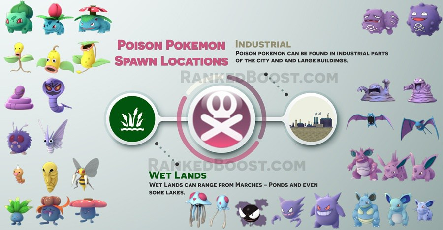

Where Do I Catch Poison Pokemon In Pokemon Go: Poison pokemon spawn near wetland with marches and on occasion in large industrial areas.
How To Get Poison Type Pokemon Tips:
Shared Pokemon Types: Almost all Poison pokemon share another type. That means Grass Pokemon like Bellsprout and Oddish who are also poison type can be found in parks easily due to their shared grass type.
Where Do I Find Poison Pokemon? – ( Poison Pokemon Locations )
Confirmed Poison Pokemon Go Spawn Locations: Wetlands – Marches – Lakes – Industrial Areas
Unconfirmed Poison Pokemon Go Spawn Locations:
There is a Total of 33 Pokemon Go Poison Pokemon: Bulbasaur, Ivysaur, Venusaur, Oddish, Gloom, Vileplume, Weedle, Kakuna, Beedrill, Venonat, Venomoth, Bellsprout, Weepinbel, Victreebel, Ekans, Arbok, Nidoran (Female), Nidoran (Male), Nidorina, Nidoqueen, Nidorino, Nidoking, Zubat, Golbat, Grimer, Muk, Koffing, Weezing, Tentacool, Tentacruel, Gastly, Haunter and Gengar.
